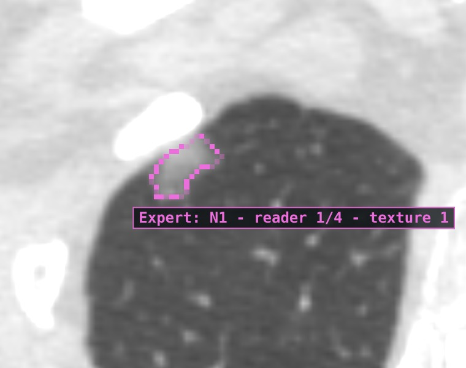
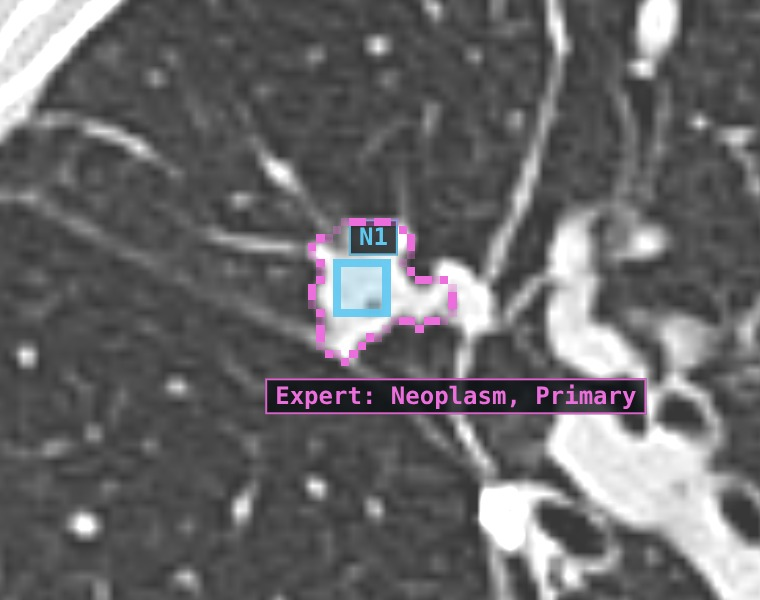
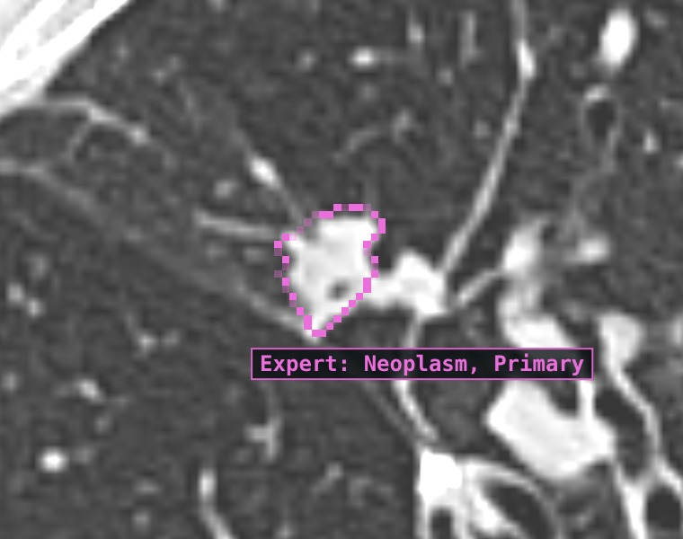
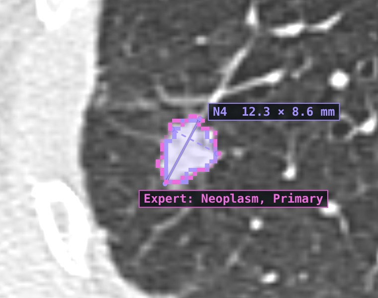

✕ ground-glass, 15.8 mm: missed
LIDC-IDRI-0075 · 4 radiologists outlined it (magenta). The AI put nothing there.

△ 13.5 mm, outlined at 8.0 mm
RIDER-1801720707 · found, but volume −83 %. Must be redrawn before use.

✕ same tumour, 15 min later
Repeat scan of the same patient: missed. The researcher adds it with S + click.

✓ 12.9 mm · Dice 0.81
RIDER-2799584460 · AI (violet) on the expert outline. Cost: 15 other candidates to reject.